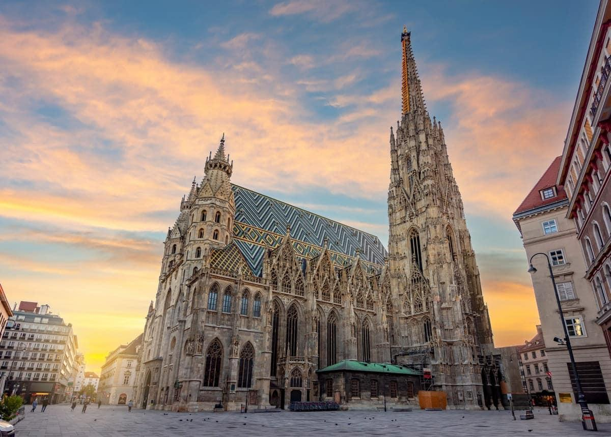

У самому серці Відень височіє велична споруда, яка сятала символом міста та однією з найвідоміших пам’яток Європи — Собор Святого Стефана.
Цей готичний храм не лише вражає своєю архітектурою, а й зберігає в собі багатовікову історію, культуру та дух Австрії.

Вступ
Історія створення
Будівництво собору розпочалося ще у XII столітті, але свого сучасного вигляду він набув у XIV–XV століттях.
Протягом століть храм неодноразово зазнавав руйнувань і реставрацій, особливо під час Другої світової війни.
Після війни австрійці об’єднали зусилля, щоб відновити святиню, зробивши її символом відродження нації.
Архітектурні особливості
Собор виконаний у готичному стилі, який характеризується високими склепіннями, витонченими арками та величезними вітражами. Особливу увагу привертає дах, вкритий різнокольоровою черепицею, що утворює складні орнаменти.
Однією з головних домінант є південна вежа, висота якої сягає понад 130 метрів. Вона довгий час була найвищою спорудою у місті. Усередині собору знаходяться численні скульптури, вівтарі та орган, що створює неповторну акустику.
Культурне значення
Собор Святого Стефана є не лише релігійним центром, а й важливим культурним об’єктом. Тут проводяться концерти класичної музики, зокрема творів Вольфганг Амадей Моцарт, який мав тісний зв’язок із цим місцем — саме тут відбулося його вінчання.
Собор також є популярним туристичним об’єктом, який щороку відвідують мільйони людей з усього світу.
Висновок
Собор Святого Стефана — це не просто архітектурна пам’ятка, а справжній символ Австрія. Він поєднує в собі історію, мистецтво та духовність, залишаючись живим свідком епох і надихаючи кожного, хто його відвідує.